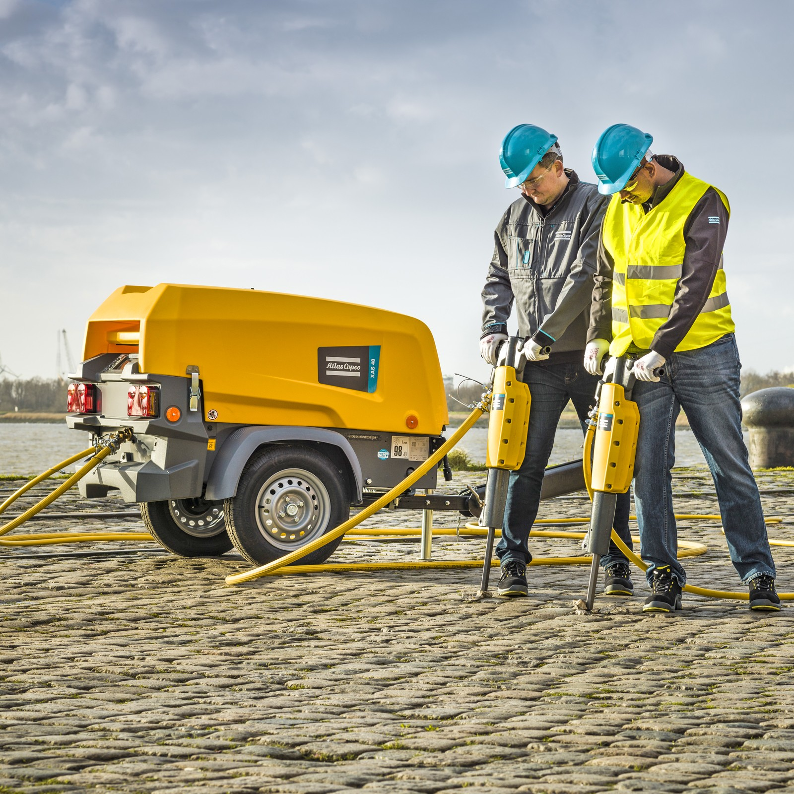

Make the introduction.
Trade shows, referrals, prospecting ads and local sales outreach bring new people into one lead capture experience. LinkedIn helps representatives find and introduce themselves to relevant decision-makers.
ZAH WHITE × ATLAS COPCO · A GROWTH CONCEPT
A remarkable machine deserves a remarkable customer journey. Scroll to open it.
 01 / PROTECTIVE CANOPY02 / DIESEL ENGINE03 / AIR END04 / COOLING CIRCUITILLUSTRATIVE CUTAWAY · NOT FACTORY CAD
01 / PROTECTIVE CANOPY02 / DIESEL ENGINE03 / AIR END04 / COOLING CIRCUITILLUSTRATIVE CUTAWAY · NOT FACTORY CAD01 / THE CONNECTED JOURNEY
Interest should never disappear after capture. My system connects every introduction to a relevant equipment page, a human conversation and someone responsible for the next step.
Tap a channel to send an introduction; tap it again for the strategy. Open an outcome card to see why it matters.
The cards build toward their goals. Completion earns a celebration; the next cycle starts as the activity charge settles.
A ten-second illustration of 100 actions, not 100 unique people. Each dot represents a batch of five. Card goals are illustrative; no messages, ads or C4C updates are sent.
Trade shows, referrals, prospecting ads and local sales outreach bring new people into one lead capture experience. LinkedIn helps representatives find and introduce themselves to relevant decision-makers.
The needs-finder result informs equipment and application segments. LinkedIn and YouTube retargeting reinforces the relevant machine and invites eligible captured prospects back to their personal sales page.
A representative reaches out, arranges a walkthrough and records the outcome. A dealer handoff keeps its internal owner. Every next action remains visible.
Results guide audience segments and creative. Ad delivery depends on platform eligibility, matching and permissions.

Large displays show the application. A real machine and a staffed, hands-on demonstration make the capability tangible. A quick QR invitation turns that attention into a useful equipment conversation.
02 / THE CUSTOMER EXPERIENCE · INTERACTIVE DEMO
A useful recommendation begins with the person and the work. The needs finder connects their application, buying team and timing to a personal equipment page.Try the experience below, one focused choice at a time.
03 / THE SALES EXPERIENCE
The relationship continues after marketing hands it over. A named owner, a recorded outcome and a due next action keep each opportunity visible.Open a sample record to explore the workflow.
C4C provides the sales context. The needs finder adds customer context. This experience makes the next move visible.
Fictional C4C-style sample. No live connection.
An approved export can supply a dated snapshot. A verified API or integration can support refreshes and permitted updates. We first confirm their C4C edition, available services, field access and matching rules.
Importing a file does not create live synchronization. Returning activities to C4C requires an explicitly configured connection. This prototype demonstrates the flow locally.
Fictional sample records plus your local profile. Real C4C integration requires edition, API access and workflow validation. No live CRM or messaging connection is active.
04 / FROM ACTIVITY TO OUTCOME
The opportunity is not only more attention. Better follow-through can change how existing interest turns into qualified conversations and booked work.Adjust the assumptions to explore the model.
Illustrative assumptions, not a forecast. No costs, attribution model or incremental profit are implied.
05 / BUILD. PROVE. SCALE.

Understand the site before choosing the message. Build a focused pilot, measure what happens after capture, and improve the experience before expanding it.
 ZAH WHITE / STRATEGY → SYSTEMS → EXPERIENCE
ZAH WHITE / STRATEGY → SYSTEMS → EXPERIENCETHE PERSON BEHIND THE SYSTEM
Growth Marketing · Systems Strategy · AI Workflow Integration
I approach marketing like an engineer: understand the moving parts, design the connections, and make the outcome measurable. I created the Triple A System as the philosophy behind this approach. It connects understanding, thoughtful adjustment and a clear next step. This is how I present an idea—by putting the experience in your hands.
Understand the situation. Adjust the approach. Make the next step visible. The same thinking connects this entire customer journey.

Scan and follow along on your phone.
An independent interview proposal by ZAH Brand Solutions. Equipment source photos and published specifications: Atlas Copco. Transparent equipment visuals are AI-assisted cutouts derived from those photos; consult manufacturer imagery for exact configuration. The interactive cutaway is an illustrative model, not factory CAD. Final selection requires engineering review of application, pressure, flow, altitude, environment and duty cycle.
XAS 110 KD · XAS 188 CD specification · XAS 400-150 CD. Accessed September 20, 2026.
The original Tip Jar Soda Pop is used for earned achievements. The presentation runs on the installed ZAH Workshop system. Personal information remains in this browser unless you choose to download your brief. Public share links omit your contact details. Walkthrough preferences are requests in a local demonstration, not confirmed bookings. No U.S. market ranking is asserted.